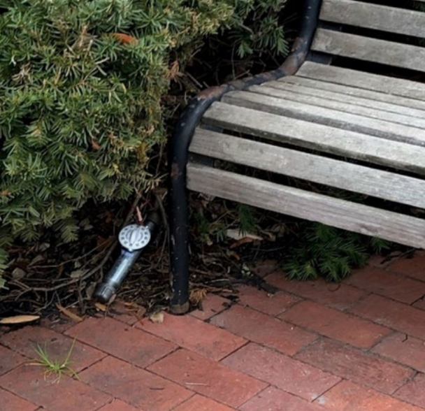
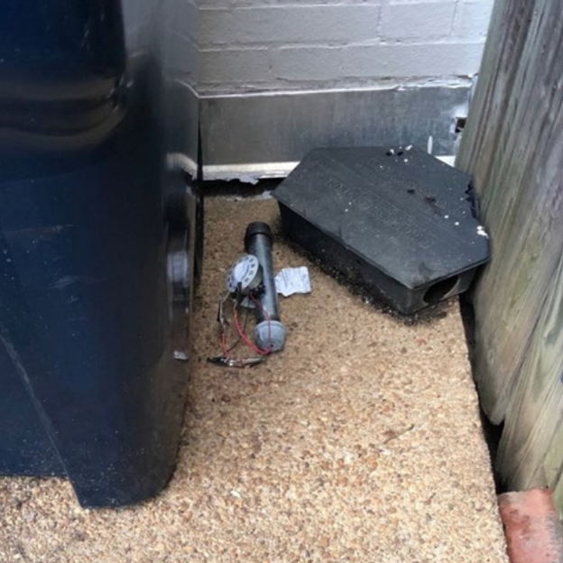
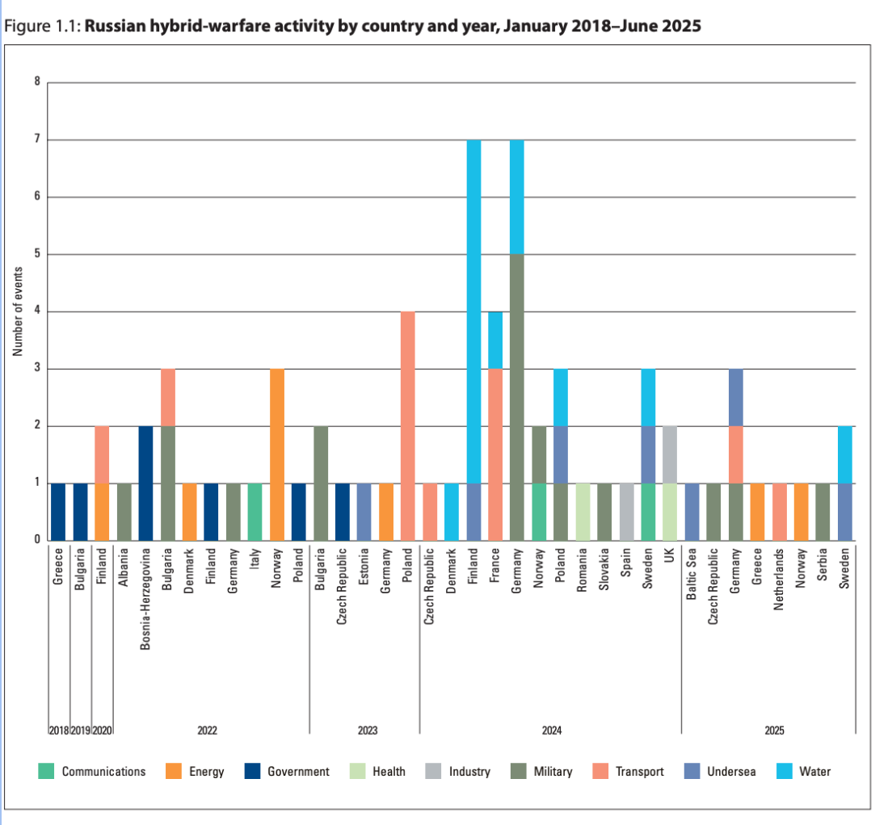
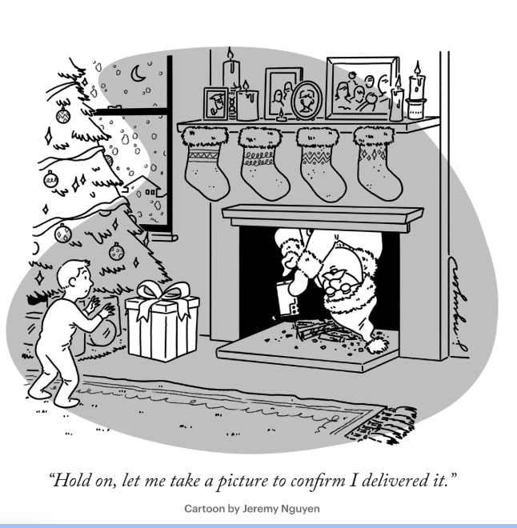
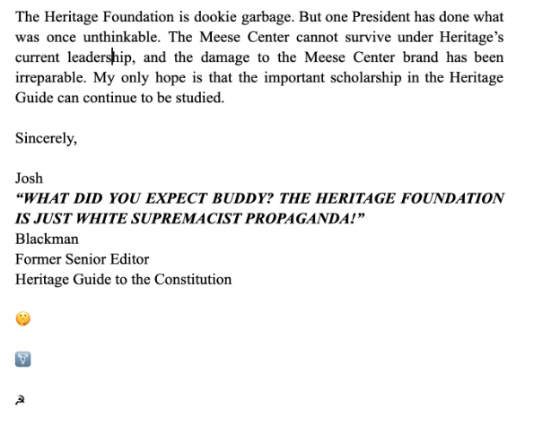
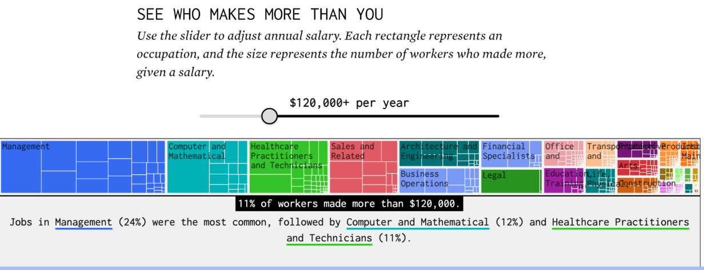
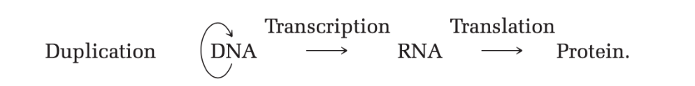
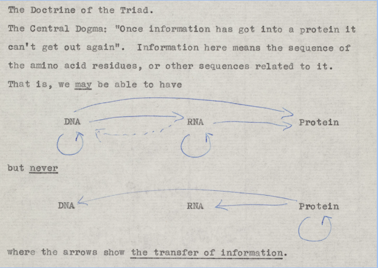
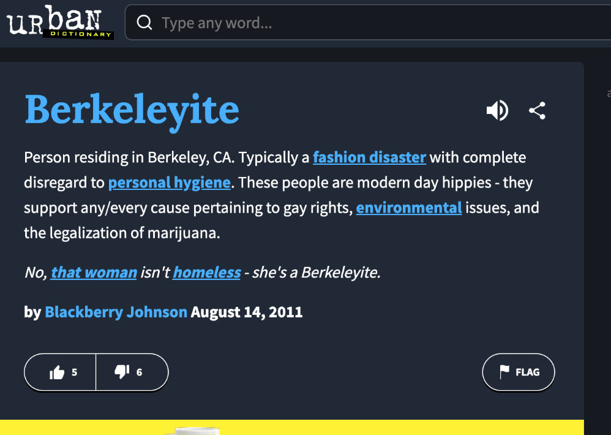

Media
This is where I put my thoughts. Here's a link dump too of organizations I go to for information.
Man arrested for planting IEDs near capital right before Jan 6th
I completely forgot about this. I recall intensely following the court cases surrounding Jan 6th in 2023-2024, combing through hundreds of pages of legal documents and articles to get a better sense of what happened, and even reading through Jack Smith’s final special counsel report. In retrospect, it was probably a waste of time, but here we are again: reading up on criminal acts related to Jan 6th.Once he confessed to planting the bombs, the court papers said, Mr. Cole explained to investigators how he did it. According to the papers, he said that he had made the explosive powder in the devices using “charcoal, Lilly Miller sulfur dust and potassium nitrate that he purchased from Lowe’s.”
Below are two pictures of the two IEDs, which I just now learned was short-hand for "improvised explosive device”. I didn’t read through the entire document, but the perpetrator definitely acted alone and everything was done in an incredibly DIY way.  
A Call for New Aesthetics
There will not be singular answers to these, but we are very interested in attempts to answer the questions. In particular, we would like to fund some artists who are thinking about them.
Grant size: $5k – $250k. Deadline: Applications are open until March 31, 2026.
Essay about chatGPT, work, and meaning
You don’t even hear the old folks wishing they could go back fifty years—in those days it wasn’t so easy to be sure of a meal. For many, it’s better this way, not the best it could be, but still better, even as they grieve what they stand to lose and what they’ve already lost.
The grief I feel, imagining a world without needed work, seems closest to this kind of loss. A future without work could be much better than ours, overall. But, living in that world, or watching as our old ways passed away, we might still reasonably grieve the loss of the work that once was part of who we were.
Christmas!!!!
I’m pulling an all-nighter the morning of Christmas. It is currently 12:50 am. I’m just going to dump things I’ve read that are Christmas related. Or, on second thought, anything I read is fair game.Okay, I went to sleep at 4 am. This will now contain all of the articles I choose to write about on Christmas day.
Court cases settled on Christmas day
Here’s an excerpt from this article detailing some of the content of these cases.
Surely only Ebenezer Scrooge could rule that it’s theft to take one’s own money. Or ruling that a construction project for a donut shop was an impermissible expansion of a preexisting nonconforming use. Taking away donuts on Christmas. Really?!
And only someone with a heart two sizes too small could have authored Zirinsky v. Carnegie Hill Capital Asset Management ordering the removal of children’s playground equipment as exceeding an easement. Did you hear what I heard? Ordering a playground removed on Christmas. You’re a mean one, Mr. Grinch!
Christmas is a Sad Season for the Poor
Russian sabotage is insane
First, a graph!
Before I get into the new things I learned, I just have to say that I hate national security briefs. Half of the text in any brief isn’t necessary and it never contains any quantitative information beyond counts of stuff like the graph above. I understand there are clear data limitations and that the authors of these briefs aren’t data scientists. But c’mon, I want cool arguments that leverage satellite data to make quantitative claims about the amount of harm caused by particular state acts.
Anyway, first off, I learned about some more Russian assassinations throughout the war. In Spain , a Russian pilot by the name of Maxim Kuzminov was found dead in February of 2024. He apparently defected to Ukraine in 2023.In Germany , the CEO of Rheinmetall, the largest German manufacturer of artillery shells, was targeted by Russia (obviously) last year in July of 2024. I feel sort of stupid for not remembering this, but I will now for the rest of time!
To wrap this up (I didn’t particularly enjoy this article), I think I’ll pay a bit more attention to Russian sabotage events. I never really paid attention in the past since it’s mostly blah blah blah infrastructure yada yada underwater fiber optic cables: super abstract stuff (half-joking when I say this).
But this excerpt did stand out to me.
These devices exploded at DHL logistics hubs in Germany, Poland and the UK and were test runs for potential future attacks against cargo aircraft.46 About 40 arson plots have been linked to Russia in Germany and Poland, including the destruction of the Warsaw shopping centre.
Last point, but the summary of policy advancements and insights at the end felt lackluster.
Chinese Peptides
I feel like I’ve been hearing about these things since late November, but they seem to have been a thing starting a bit earlier this year according to this SF Standard article.Ji’s stash didn’t come from a pharmacy but from a Chinese peptide dealer she’d been connected to on WhatsApp by tech friends. She paid the guy $195 for 10 vials. “Three weeks later, it shows up at your door,” she said.
Is the consumer basis somehow different since they’re from SF? Probably, but in the sense that they’re more open to injecting Chinese peptides in the first place. I would assume that a percentage of consumers are vain/insecure and that can be attributed to the startup-AI-industrial complex that has a lot of cultural sway among younger tech workers, but, again, there are huge benefits with seemingly low costs.
Mathematical modeling in biology
I thought I would have a lot more to say about this essay, but I can barely understand biology! Here’s my favorite excerpt of the pages I did understand.‘Models in analytical pharmacology are not meant to be descriptions, pathetic descriptions, of nature; they are designed to be accurate descriptions of our pathetic thinking about nature’.
Just substitute ‘systems biology’ for ‘analytical pharmacology’ and you have it. Black went on to say about models that: ‘They are meant to expose assumptions, define expectations and help us to devise new tests’.
Christmas Day New Yorker Cartoon
Lessons From Modern Parenthood From Rahm Emanuel
[...]
Better yet, I gained from Ilana’s choice some unexpected leverage. By revealing her ploy to all her many friends in this article, I am, years later, teaching her a lesson I once feared she might never learn: Revenge is a dish best served cold.
During my childhood, my mother insisted that our family convene at a circular table without a head so that everyone would feel an equal right to speak and be heard… But my parents believed that open debate was the best way for us to learn and gain confidence. Amy and I continued that tradition with one update: We banished screens from the table. The point was to interact, even if you were too young to talk, or too much of a teenager to care what your moron parents had to say. The meals paid a dividend.
The well deserved demise of the Heritage Foundation
From Top Heritage Officials Flee to Mike Pence’s Nonprofit as Think Tank Fractures:“Why these people are coming our way is that Heritage and some other voices and commentators have embraced big-government populism and have been willing to tolerate antisemitism,” Pence said.
Among those joining AAF are John Malcolm, the head of the foundation’s legal and judicial studies center, Kevin Dayaratna, the head of the foundation’s data analysis center and Richard Stern, the director of the foundation’s economic policy studies institute. AAF said it is bringing on about a dozen other staff members. Malcolm is taking seven members of his center’s team.
On the donor front, it seems like they’re moving away from Heritage in favor of AAF (Advancing American Freedom).
“President Trump’s term is coming to an end. The Republican Party is not going to see really a primary among candidates but a primary on principles and fundamental policies,” he said.
AAF said it was able to raise more than $10 million in a few weeks to make the new hires
Oh shoot, I almost forgot to mention this, but here’s a letter from Josh Blackman (who resigned from the Heritage Foundation) making it explicit that this divide is due to rightist antisemitism.
As Senator Ted Cruz observed , "this poison of antisemitism on the right . . . is spreading with young people."
I agree with Ben Shapiro : "If the Heritage Foundation wishes to retain its status as a leading thought institution in the conservative movement, it must act as ideological border control." Antisemitism is always the canary in the coalmine. History teaches us that any society that fails to protect its Jewish people is destined for despair.

Warren Buffet is sort of cool!
This was a really refreshing article to read. It was written by Seth Klarman, another value-investor, and it’s a piece about Warren Buffet’s retirement and his life.2. Simplicity of thought, getting right to the heart of the matter in analyzing each investment.
3. The ability to distinguish good investments from bad ones, and great investments from merely good ones—and the insight and conviction to stick with the best ones over time. Buffett, to paraphrase the investment guru Peter Lynch, never cut his flowers or watered his weeds.
4. The ability to stay focused over long periods and avoid distraction.
5. The mental agility to alter his strategy when he found a way to improve, such as when he came to more significantly emphasize the quality of a business in his decision making.
Simplicity is also highly valued in, at the very least, non-hard STEM fields e.g mathematics, computer science, etc. Being able to get to the heart of a proof or theorem is a sign of a high mathematical maturity and (2) is valuing just that, but in a completely different setting.
Point (3) feels more easily applicable to fields that are under the umbrella of applied math. This sort of thinking is highly-valued in economics. Being able to see through the data, synthesize it with theory, and all in service to make a profoundly new insight into the world is hard and very few people in this world can do that consistently at a high level of quality.
(4) and (5) are, again, common virtues within academia that point to an academic’s quality.
Cool Website About Jobs and Incomes
From Crémieux.
To clarify, this is the share of people who make an income and so children, the elderly, and disabled aren't included in the above.
This is also from the author of the article, which summarizes some of the data, which is from the five-year American Community Survey for 2023.
At $45,000 per year, half of workers make more. The share of workers who make more decreases quicker with higher thresholds. At $100,000, only 16% of workers make more. 4% of workers make more than $200,000.
The final 1% makes more than $520,000. While the categories — management, healthcare practitioners, and sales — seem about right, I am curious about the less typical jobs, such as cashiers and elementary school teachers who reported making more than half a million in salary. I suspect these are directors and managers who do more than manage. Or it could just be noise. I’m betting the former.
The Data on Self-Driving Cars Is Clear. We Have to Change Course.
The link is a NYT article that has a pretty good exposition on Waymo’s data. I’m just going to copy
and paste some graphs from Waymo's original article and
call it a day.
The most jarring bar is the one for differences in crashes at intersections.
For some reason, the article only includes the average across all cities, but San Francisco is weirdly
unsafe relative to even LA. I wonder why that’s the case.
Lior Pachter Dunks on Watson
The Cold Spring Harbor Laboratory created an obituary for James Watson who died a month ago (November 5th). I’ve never heard of CSHL before, but apparently they’re a big deal. Anyway, Pachter just dunks on Watson with his comments (in red) and here are some excerpts of his commentary.
Watson, along with Crick and Wilkins were awarded the 1962 Nobel Prize in Physiology or Medicine. Watson also received the Presidential Medal of Freedom from President Gerald Ford and the National Medal of Science from President Bill Clinton, among many other awards and prizes.
It is true that Watson received these awards. Coincidentally, William Shockley was also awarded the Nobel Prize around the same time as Watson (physics, 1956) and he promoted racist eugenics, arguing that people of African Ancestry posed a “dysgenic risk”, as well as advocating for sterilization. He used his Nobel prestige to advance his malicious and scientifically bankrupt ideas (source: Scott Rosenberg, 2017)
He portrays Watson as not as intelligent as his awards make him out to be, a dick, and a race realist. Ronald Fischer was sort of a race realist and a dick, but a genius within statistics. Watson, from my limited understanding of him, seems to be like Ronald Fischer, but just worse in every way. He also just seemed to be particularly petty especially against other women within biology e.g Rosalind Franklin.
As an author, Watson wrote two books at Harvard that were and remain best sellers. The textbook Molecular Biology of the Gene, published in 1965 (7th edition, 2020), changed the nature of science textbooks, and its style was widely emulated.
In this textbook Watson got the central dogma wrong, presenting it in a profoundly misleading way. (source: Matthew Cobb, 2024).
But on pages 1209 and 1211 of this issue of Nature, Baltimore and Mizutani and Temin claim independently that RNA tumour viruses contain an enzyme which uses the viral RNA as a template for the synthesis of DNA and thus reverses the direction of genetic transcription.
Now, I’m not too sure of Pachterß's point. I can’t find a copy of the original 1965 book since later editions have presumably been updated accordingly. However, I did easily find a copy of the seventh edition, which ßcontains theß following sentence on page 41.
This sentence is out of context since this is what was written on page 33.
In 1956 Francis Crick referred to this pathway for the flow of genetic information as the central dogma:
 The arrow between DNA and RNA indicates that RNA synthesis (called transcription) is directed by a
DNA template. Corre- spondingly, the synthesis of proteins (called translation) is directed by an RNA
template. Most importantly, the last two arrows were presented as uni- directional; that is, RNA
sequences are never determined by protein tem- plates nor was DNA then imagined ever to be made on RNA
templates.
However, as we will see in Chapter 12, RNA chains sometimes do act as templates for DNA chains of
complementary sequence. Such reversals of the normal flow of information are very rare events compared
with the enormous number of RNA molecules made on DNA templates.
I think the authors of the seventh edition essentially pulled that diagram from Crick’s original
thought process (found through Cobb’s article), which is pretty interesting.

From everything I’ve read so far, it seems like a lot of people misinterpreted what Crick’s intentions were, so I don’t think this is that big of a deal. It seems like the book has had a net-positive impact on people and especially due to all of the lovely people who continually created newer and better editions of it.
The Double Helix (1968) was a sensation at the time of publication. Watson’s account of the events that resulted in the elucidation of the structure of DNA remains controversial, but still widely read.
Prior to the publication of The Double Helix, Francis Crick wrote that “If you publish your book now, in the teeth of my opposition, history will condemn you”. Watson published the book anyway (source: letter by Francis Crick, 1967) .
This is another point, which, on the surface, seems like a straightforward dunk, but actually has a
much more interesting story. The point Pachter is implicitly making is completely true: Watson’s
account of the discovery of the structure of DNA in the original 1968 autobiography and Crick very
much condemned him at the time. The Double Helix is quite inaccurate and is a very personal account of
every event and of other people’s involvement.
The canonical example everyone refers to is Rosalind Franklin who is consistently referred to as
“Rosy” . There were tensions
between her and Maurice Wilkins (another person who shared the Nobel with
Watson & Crick), but Watson describes Rosalind as being too assertive as a woman and blames her lack
of femininity for the issues between her and Wilkins.
The following excerpt is from page 13 of Gunther Sten’s 1980 Norton Critical Edition of The Double
Helix, which, alongside the original book, contains a lot of material that contrasts with Watson’s
view.
[...]
There was never lipstick to contrast with her straight black hair, while at the age of thirty-one her dresses showed all the imagination of English blue-stocking adolescents.
So it was quite easy to imagine her the product of an unsatisfied mother who unduly stressed the desirability of professional careers that could save bright girls from marriages to dull men. But this was not the case.
Berkeleyite or Berkeleyan?
Oddly enough, Urban Dictionary only has a record from 2011 of Berkeleyite (Berkeleyside article was published April 2011). “Berkelyite” is pretty lame, but “Berkelite” looks/sounds a bit better.

Grad Student's Thoughts: My First PhD Semester - The Good, the Bad, and the Ugly
Anyway, right before our midterm and right after, he emphasized this to each and every person in that class and I’m glad he did. I didn’t score as well as I had wanted (earned a B), but his reassurance that we all deserved to be there did put a smile on my face when we received our grades for that midterm a week later.
“Alright. You’ve managed to weasel your way through so far. Now’s the moment they finally uncover that you’re a fraud.”
This is a quote from her advisor.
I’m kind of lazy, so here are two other excerpts that are quite interesting.
Rest isn’t indulgent, it’s preventative maintenance. Because if your priority is the work, then every other potential stressor - physical discomfort, exhaustion, poor sleep, hunger, isolation — needs to be softened, minimized, or removed.
Open Source Project that Discovers Blogs!
Source: Statistical Modeling, Causal Inference, and Social Science
Sermet Pekin writes: I built an open-source project that discovers blogs through recursive network exploration–basically PageRank for the blogosphere. Your blogroll was the main seed source.It recursively discovers new blogs by following citations and parsing RSS feeds, mapping out how blogs link to each other. Starting from a curated seed list (I used your blogroll recommendations), it can scale to hundreds or thousands of blogs depending on exploration depth. It supports different exploration strategies—breadth-first to explore widely across communities, depth-first to dive deep into niches, or mixed approaches.
I thought you might find it interesting: – Helps surface quality blogs without relying on social media algorithms – Your blogroll made excellent seed data—the blogs were well-curated and interconnected Fun!
Free Riding in Mobile Ecosystems
This article is from the International Center for Law & Economics and I don't really pay attention to
antitrust stuff, but this article seemed pretty interesting. The subject of the article is the
European Union's Digital Markets Act (DMA, 2023), which forces "gatekeepers"-think Apple and Google-to
allow for alternative in-app payment processing and app stores on their mobile operating systems.
Here's an
article
with some examples of alternative app stores that are allowed in the EU
Source: Brian Albrecht (Chief Economist) & Dirk Auer (Director of Competition Policy)
The EU’s Digital Markets Act (DMA) and similar regulations around the world require designated “gatekeepers” to open their mobile operating systems to third-party app stores and sideloading. They also typically include requirements that developers be allowed to use alternative in-app payment systems and to “steer” users toward purchases outside the app store.Now, if one forces app stores to allow developers to contract alternative payment processors (think PayPal or Venmo) then developers would be able to keep more of their revenue and free ride off of the investments of all of those alternative app stores. Additionally, these alternative app stores would themselves be relying on OS-level infrastructure (discovery, security, etc.) and be free riding off of Apple's investments. This would lead to underinvestment in what makes the Apple app store work reasonably well in the first place e.g fraud protection, curation, advertising, etc.
Source: Brian Albrecht (Chief Economist) & Dirk Auer (Director of Competition Policy)
Alternative payments and steering compound the problem. Developers can use the store’s discovery and curation infrastructure to acquire users, then route purchases through lower-cost payment channels. The store still bears the cost of matching users and developers but loses the revenue that justified that investment.Source: Apple
Developers operating under the Alternative Terms Addendum for Apps in the EU have the option to distribute their iOS and iPadOS apps in the EU via the App Store, Web Distribution, and/or alternative app marketplaces. They can also use alternative payment processors in their apps in the EU on the App Store across Apple operating systems. The CTF only applies to apps downloaded by EU users on devices running minimum of iOS 17.4 and iPadOS 18.[...]
Fee for each first annual install over one million. Developers pay a CTF of €0.50 for each first annual install over one million in the past 12 months.
Game Theory and the First World War
Not completely sure where I found out about this article. It probably was from Marginal Revolution. Regardless, here's an excerpt that gave me a bit more insight on the art of game theoretic modeling.
Source: Journal of Economic Literature, Roger Myerson
One of the triumphs of Fearon’s approach is his demonstration that a preventive war by a currently dominant nation against a rising nation, such as Germany contemplated against Russia in 1914, can be understood in terms of moral-hazard commitment problems in a dynamic game.[...]
The key to this analysis is that the rising nation cannot credibly commit itself now to refrain from using its ability to threaten war in the future after power has shifted in its favor, but the currently dominant nation could prevent this shift of power by launching a costly war now.
Source: Journal of Economic Literature, Roger Myerson
As Wolford rightly argues, we can gain important insights into the problems of war when we try to explain leaders’ choices as rational decisions in terms of natural human values. But what would happen if we tried to rationalize a surprising decision that was actually a mistake? The surprising move could be rationalized in a Bayesian game by hypothesizing that the decision maker has an unusual type with preferences or beliefs that would induce such behavior[...]
Thus, Germany’s surprising invasion of Belgium in 1914 could cause people in Britain to infer that Germany had aggressive expansionist leadership, while people in Germany might consider such beliefs to be unjustified British prejudice.
ELOISE LIKES MAKING THINGS
This person's website is pretty interesting. I found out about it from this article about sex. Her twitter account is linked in the third footnote. Below are some excerpts from the writing section that I thought were cool.
Source: 'Appreciation'
When walking outside I sometimes get a sense of appreciation for how paradise-like my surroundings are.I walk to the park near my home. A park! How absurdly utopian it is that we’ve fenced off an area that’s sole purpose is just to be nice. In the park there are pigeons waddling around fat on French fries, because food is so abundant that people are sometimes careless with it. (And French fries exist! Transcendent deliciousness beyond a cave man’s wildest dreams.)
Source: If I were a billionaire
If I were a billionaire I would hire someone well-acquainted with my tastes whose job it is to print out tweets I'd enjoy and hand them to me on paper,so I can't see bad comments and can't get sucked into browsing twitter.
The University of California knows its stereotypes. How does college football fit in?
This article was pretty interesting. I don't follow football (certainly not college football), but how our (Cal's) team changes after the devastating loss at the big game is sure to be interesting. Putting that aside, this quote is pretty funny without sufficient context.
Source: The Athletic (NYT)
“I think that’s very much the ethos now: Everybody has to do their part to save Cal football,” Kranz said. “We have to turn to communism to save Cal football, not out of ideology, but out of desperation. A lot of this effort is about trying to preserve something that is a unifying sense of community for the campus when we don’t have a ton of those things here.”Mapping the future with 3D-printed titanium Apple Watch cases
Source: Apple
This year, all Apple Watch Ultra 3 and titanium Apple Watch Series 11 cases are 3D-printed with 100 percent recycled aerospace-grade titanium powder, an achievement not previously considered possible at scale.